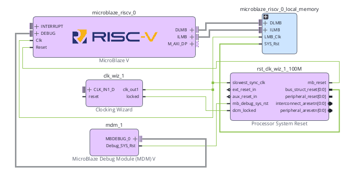
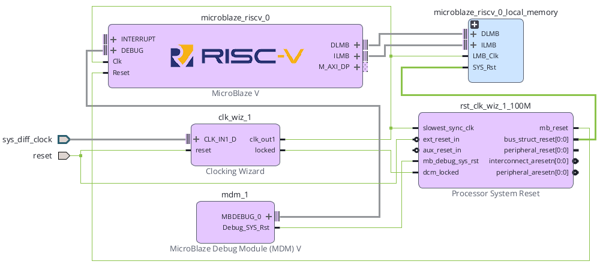

Clock
W5의 100 MHz를 SoC 내부 동기 기준으로 사용한다.
Basys3 SoC + NPU · SoC 02
Basys3의 100 MHz 기준 Clock이 MicroBlaze V 시스템 Clock이 되고, Clock 안정 상태와 외부 Reset을 이용해 CPU·Bus·Peripheral Reset이 어떤 순서로 생성되고 해제되는지 실제 Vivado 신호를 기준으로 정리한다.
W5의 100 MHz를 SoC 내부 동기 기준으로 사용한다.
외부 Reset과 Clock lock 상태를 이용해 CPU·Bus Reset을 생성한다.
Block Design의 실제 신호 연결과 Reset polarity를 추적한다.
MicroBlaze V, BRAM Controller, AXI Interconnect, Peripheral은 모두 Clock을 기준으로 상태가 변한다. Reset은 이 회로들을 알려진 초기 상태로 만들고, Clock이 안정된 뒤 정해진 순서로 동작을 시작하게 한다.
FPGA 내부 모든 동기 회로의 시간 기준을 만든다.
Clocking Wizard가 안정화되었는지 locked로 알린다.
Processor System Reset이 용도별 Reset을 생성한다.
Bus → Peripheral → CPU 순으로 Reset을 해제한다.
Basys3 Reference Manual은 보드에 단일 100 MHz oscillator가 있고 FPGA의 W5 핀으로 들어간다고 설명한다. W5는 Bank 34의 MRCC(Multi-Region Clock Capable, 여러 Clock 영역으로 전달 가능한 Clock 입력)이다.
| 항목 | Basys3 기준 | SoC 02에서의 역할 |
|---|---|---|
| Oscillator | 100 MHz | Clocking Wizard의 입력 Clock |
| FPGA Pin | W5 | XDC의 Primary Clock 입력 |
| Clock Period | 10 ns | Vivado Timing 기준 |
| IOSTANDARD | LVCMOS33 | Basys3 Clock 입력 전기 규격 |
따라서 XDC에서 create_clock의 period는 10.00 ns로 지정한다.
Clocking Wizard는 FPGA 내부 MMCM/PLL 자원을 이용해 입력 Clock으로부터 필요한 주파수와 위상의 Clock을 만든다. SoC 02에서는 입력과 출력 모두 100 MHz를 사용하더라도, 시스템 Clock 생성과 locked 상태 관리를 위해 Clocking Wizard를 그대로 유지한다.
| 신호 | 방향 | 의미 |
|---|---|---|
clk_in1 | 입력 | Basys3 100 MHz 기준 Clock |
clk_out1 | 출력 | MicroBlaze V SoC 내부 System Clock |
reset | 입력 | Clocking Wizard 자체 Reset |
locked | 출력 | Clock 회로가 안정되어 출력 Clock을 사용할 수 있음을 알리는 상태 |
locked는 일반적인 동작 완료 신호가 아니라 Clock 생성 회로가 안정된 상태를 의미한다. CPU Reset 해제 판단에 사용한다.Processor System Reset은 외부 Reset, Debug Reset, Clock lock 상태를 받아 MicroBlaze V·Bus·AXI Peripheral에 필요한 여러 종류의 Reset을 만든다. 하나의 버튼 Reset을 모든 블록에 직접 연결하는 대신 각 회로의 극성과 해제 순서를 맞추는 역할을 담당한다.
| 방향 | 신호 |
|---|---|
| 입력 | slowest_sync_clk / ext_reset_in / aux_reset_in / mb_debug_sys_rst / dcm_locked |
| 출력 | mb_reset / bus_struct_reset / peripheral_reset / interconnect_aresetn / peripheral_aresetn |
AMD PG164는 이 IP를 Processor/Bus/Peripheral이 한 Clock 체계 안에서 안전하게 Reset되도록 하는 전용 Reset 모듈로 설명한다.
| Signal | 방향 | 극성 | 역할 |
|---|---|---|---|
slowest_sync_clk | Input | Clock | Reset 동기화와 해제 순서의 기준 Clock |
ext_reset_in | Input | 설정 가능 | 보드의 외부 Reset 입력 |
aux_reset_in | Input | 설정 가능 | 시스템 내부의 보조 Reset 입력 |
mb_debug_sys_rst | Input | Active-High | MDM V(MicroBlaze Debug Module V)의 Debug Reset |
dcm_locked | Input | 상태 | Clock 생성 회로가 안정되었는지 확인 |
mb_reset | Output | Active-High | MicroBlaze V Core Reset |
bus_struct_reset | Output | Active-High | Bus 구조용 Reset |
peripheral_reset | Output | Active-High | Active-High Peripheral용 Reset |
interconnect_aresetn | Output | Active-Low | AXI Interconnect 계층 Reset |
peripheral_aresetn | Output | Active-Low | AXI Peripheral 계층 Reset |
| 표기 | Reset이 걸린 상태 | Reset이 풀린 상태 |
|---|---|---|
mb_reset | 1 | 0 |
bus_struct_reset | 1 | 0 |
peripheral_reset | 1 | 0 |
interconnect_aresetn | 0 | 1 |
peripheral_aresetn | 0 | 1 |
AXI 계열 IP는 aresetn이라는 Active-Low Reset을 많이 사용한다. 따라서 peripheral_aresetn을 AXI Peripheral의 s_axi_aresetn 등에 연결할 때 별도의 반전기를 임의로 넣지 않는다.
AMD UG1711는 Board Flow를 사용하지 않는 경우에도 Clocking Wizard의 locked 출력을 Processor System Reset의 dcm_locked 입력에 연결해야 한다고 명시한다.
PG164에 따르면 dcm_locked가 동작 중 Low로 내려가면 Processor System Reset은 모든 Reset 출력을 다시 활성화한다. 따라서 Clock이 불안정한 동안 CPU와 Bus가 동작을 계속하지 않도록 막는다.
locked와 dcm_locked가 끊겨 있으면 CPU가 Reset에서 정상적으로 빠져나오지 못하거나, Clock 안정 상태와 무관하게 Reset이 제어될 수 있다.slowest_sync_clk는 Processor System Reset 내부의 동기화 및 Reset 해제 시퀀스가 기준으로 삼는 Clock이다. PG164는 시스템에서 사용하는 동기 Clock 중 가장 느린 Clock에 연결하도록 설명하며, 일반적으로 AXI4-Lite Clock을 예로 든다.
SoC 02는 하나의 100 MHz Clock Domain만 사용하므로 다음과 같이 연결한다.
peripheral_aresetn을 모든 비동기 Clock Domain에 무조건 공유하면 안 된다.PG164는 Reset이 활성화될 때는 출력들이 함께 활성화되지만, Reset 해제는 순서를 두어 진행한다고 설명한다.
| 순서 | 해제되는 Reset | 100 MHz 기준 | 의미 |
|---|---|---|---|
| 1 | bus_struct_reset, interconnect_aresetn | 기준 시점 | Bus/Interconnect를 먼저 준비 |
| 2 | peripheral_reset, peripheral_aresetn | 16 clocks 후 ≈ 160 ns | Peripheral 동작 허용 |
| 3 | mb_reset | 추가 16 clocks 후 ≈ 320 ns | CPU가 마지막에 실행 시작 |
이 160 ns, 320 ns 값은 Reset 해제 시퀀스 구간만 100 MHz로 환산한 값이다. 외부 Reset 입력 검출, Clock lock 획득 시간까지 포함한 전체 Reset 시간은 이 값보다 길 수 있다.

| 항목 | SoC 02 확인값 |
|---|---|
| Local Memory | SoC 01과 동일 |
| Cache | None |
| Debug | Debug Enabled |
| Peripheral AXI Port | Enabled |
| Interrupt Controller | Off |
| Clock Connection | New Clocking Wizard (100 MHz) |

| 출발 신호 | 도착 신호 |
|---|---|
| clk_wiz_1/clk_out1 | microblaze_riscv_0/Clk |
| clk_wiz_1/clk_out1 | local_memory/LMB_Clk |
| clk_wiz_1/clk_out1 | proc_sys_reset/slowest_sync_clk |
| clk_wiz_1/locked | proc_sys_reset/dcm_locked |
| proc_sys_reset/mb_reset | microblaze_riscv_0/Reset |
Clocking Wizard와 Processor System Reset이 내부에 생성되었으면 Basys3의 외부 Clock과 Reset을 Block Design 외부 포트로 연결한다.

| 출발 신호 | 도착 신호 |
|---|---|
| Basys3 W5 · 100 MHz | clk_wiz_1/clk_in1 |
| Basys3 BTNC · U18 | clk_wiz_1/reset |
| Basys3 BTNC · U18 | proc_sys_reset/ext_reset_in |
| clk_wiz_1/locked | proc_sys_reset/dcm_locked |
| clk_wiz_1/clk_out1 | proc_sys_reset/slowest_sync_clk |
Digilent Master XDC의 Clock과 Center Button 줄만 활성화하고, Block Design에서 만든 외부 포트 이름과 일치시킨다.
## Clock signal
set_property -dict { PACKAGE_PIN W5 IOSTANDARD LVCMOS33 } [get_ports clk]
create_clock -add -name sys_clk_pin -period 10.00 -waveform {0 5} [get_ports clk]
## Center Button : Reset
set_property -dict { PACKAGE_PIN U18 IOSTANDARD LVCMOS33 } [get_ports btnC]| 포트 | 핀 | 기능 |
|---|---|---|
clk | W5 | 100 MHz Primary Clock |
btnC | U18 | Active-High 외부 Reset 입력 |
clk_0, reset_0처럼 자동 생성되었다면 XDC를 먼저 바꾸지 말고 Block Design의 외부 포트 이름을 의도한 clk, btnC로 정리한 뒤 XDC와 맞춘다.Basys3 Center Button은 누르면 High가 되는 입력으로 사용하므로 ext_reset_in도 Active-High로 맞추는 것이 직관적이다.
| 항목 | SoC 02 기준 | 이유 |
|---|---|---|
| External Reset Logic Level | Active-High | BTNC 누름 = High |
| Auxiliary Reset | 미사용 | 현재 내부 보조 Reset 없음 |
| MicroBlaze Debug Reset | MDM V 연결 | Debug Reset 경로 유지 |
dcm_locked | clk_wiz_1/locked | Clock 안정 상태 반영 |
slowest_sync_clk | 100 MHz System Clock | 현재 단일 Clock Domain |
외부 Push Button은 FPGA Clock과 비동기이며 기계적 바운스가 발생할 수 있다. Processor System Reset은 Reset 입력 검출과 동기화 기능을 제공하지만, 이를 일반적인 Push Button Debouncer로 간주하지 않는다.
MDM V의 Debug_SYS_Rst는 mb_debug_sys_rst로 연결한다. aux_reset_in을 사용하지 않으면 Active-High 설정에서 0으로 고정한다.
Block Design에서 아래 다섯 경로를 실제 Wire를 따라가며 확인한다.
clk → clk_wiz_1/clk_in1
clk_wiz_1/clk_out1 → microblaze_riscv_0/Clk
clk_wiz_1/locked → proc_sys_reset/dcm_locked
btnC → proc_sys_reset/ext_reset_in
proc_sys_reset/mb_reset → microblaze_riscv_0/Reset
SoC 02 SECTION 12~15에서 Basys3 외부 Clock/Reset 포트와 내부 필수 경로 연결을 완료하고 Ctrl+S로 저장한 뒤 Validate Design을 실행한다. SoC 01의 미연결 중간 상태에서는 실행하지 않는다.
MicroBlaze V, Local Memory, Processor System Reset이 동일한 100 MHz Clock에 연결되었는지 확인한다.
AXI 계층이 아직 최소 구성이라도 interconnect_aresetn, peripheral_aresetn이 올바른 극성으로 생성되는지 확인한다.
Synthesis 이후 100 MHz Primary Clock이 10 ns Period로 인식되는지 확인한다.
| 증상 | 원인 후보 | 확인 위치 |
|---|---|---|
| CPU가 실행되지 않음 | mb_reset이 계속 High | locked → dcm_locked, 외부 Reset 상태 확인 |
| Reset이 반대로 동작 | ext_reset_in polarity 불일치 | Processor System Reset 설정과 BTNC 논리 확인 |
| Clock 관련 Critical Warning | XDC create_clock 누락 또는 포트명 불일치 | W5, get_ports clk, Report Clocks 확인 |
| AXI IP가 Reset에서 안 풀림 | Active-Low Reset을 잘못 반전 | peripheral_aresetn, interconnect_aresetn 확인 |
| Reset 해제 직후 불안정 | Clock lock 전에 Reset 해제 | locked → dcm_locked 연결 확인 |
| 다른 Clock Domain 추가 후 오동작 | Reset을 모든 Domain에 공통 사용 | Clock Domain별 Reset 동기화 구조 재설계 |
W5로 정의되어 있다.10.00 ns이다.clk_wiz_1/locked → proc_sys_reset/dcm_locked가 연결되어 있다.clk_wiz_1/clk_out1 → proc_sys_reset/slowest_sync_clk가 연결되어 있다.btnC(U18) → ext_reset_in이 연결되어 있다.mb_reset이 Active-High임을 이해한다.interconnect_aresetn, peripheral_aresetn이 Active-Low임을 이해한다.| 문서 | 확인 항목 |
|---|---|
| AMD UG1711 · MicroBlaze V Processor Embedded Design User Guide · 2026.1 | Clocking Wizard 생성, Processor System Reset 자동 연결, locked → dcm_locked, Connection Automation |
| AMD UG994 · Designing IP Subsystems Using IP Integrator · 2026.1 | Designer Assistance, Block Automation, Connection Automation, 외부 Clock/Reset 연결 흐름 |
| AMD PG164 · Processor System Reset Module v5.0 | Reset 입출력, active polarity, dcm_locked, slowest_sync_clk, Reset 해제 순서 |
| Digilent Basys 3 Reference Manual | 100 MHz Oscillator, W5 Clock Pin, Clocking Resources |
| Digilent Basys-3-Master.xdc | W5, 10 ns Clock Constraint, U18 Center Button |